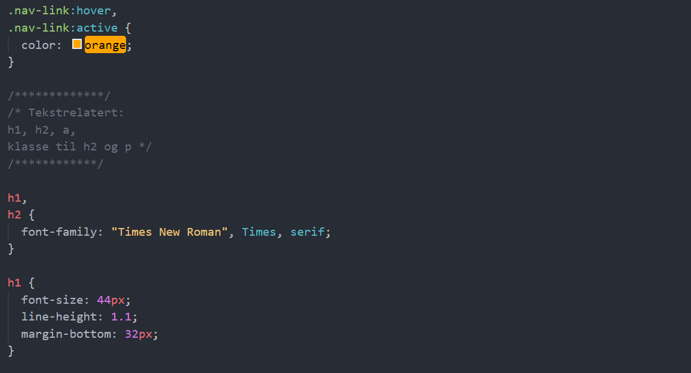
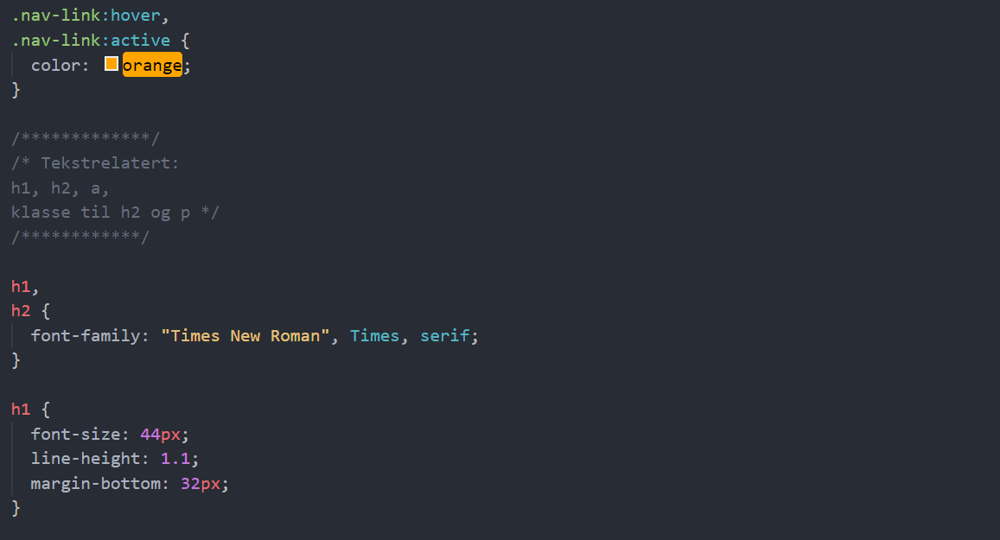

Tilgjenelighet
Tilgjengelighet er praksisen med å gjøre nettsidene dine brukbare av så mange mennesker som mulig.

Tilgjengelighet er praksisen med å gjøre nettsidene dine brukbare av så mange mennesker som mulig.
Før vi startet med å lage sidene, så var det noen kodevalg som vi bestemte oss for. Vi skulle ha et godt organisert innhold som hjelper brukere til å orientere seg og å navigere effektivt. Sidene skulle har klare titler og er organisert ved hjelp av beskrivende seksjonsoverskrifter hvor overskrifter, lister, avsnitter er riktig merket. I tillegg var det slik at vi skulle velge semantice tags som dere kan se på bildet til høyere så langt det gikk. For at folk som bruker skjermleser skulle få bedre opplevese. Dette er noe vi har gjennomgående i alle sidene. Et annet valg vi gjorde var hvordan vi stylet siden vår. Font-style og font-size skulle være lesebar for alle og i tillegg så valgte vi enkle og fine farger slik at folk med fargeblindet også klarer å lese sidene våre. Brukere blir informert om deres nåværende plassering hvor brukeren vet hvilken side og kan bevege seg i de forksjellige sidene. Tastaturets fokus er synlig, brukeren kan navigere med piltasten og tabben. Vi har linker i naven så de som leser kan komme til andre sidene ved å bare bruke tasteturen og fokusrekkefølgen. Hensikten med en lenke er åpenbar og koblingen vises på forhånd i tillegg bestemte vi å ha hoover i alle link slik at de som sliter med å se kan se at det er en link de kan trykke på. Hensikten med en lenke er åpenbar og koblingen vises på forhånd.
 


Vi brukte ..... for å teste om koden vår var accecsibility Bilder inkludere tilsvarende alternativ tekst (alt tekst) i markeringen/koden. Hvis alternativ tekst ikke er oppgitt for bilder, er bildeinformasjonen utilgjengelig, for eksempel for personer som ikke kan se og bruke en skjermleser som leser høyt informasjonen på en side, inkludert alternativteksten for det visuelle bildet. Når tilsvarende alt-tekst er gitt, er informasjonen tilgjengelig for personer som er blinde, samt for personer som slår av bilder (for eksempel i områder med dyr eller lav båndbredde). Den er også tilgjengelig for teknologier som ikke kan se bilder, for eksempel søkemotorer. Noen mennesker kan ikke bruke en mus, inkludert mange eldre brukere med begrenset finmotorisk kontroll. Et tilgjengelig nettsted er ikke avhengig av musen; den gjør all funksjonalitet tilgjengelig fra et tastatur. Da kan funksjonshemmede bruke hjelpeteknologier som etterligner tastaturet, for eksempel taleinndata. Akkurat som bilder ikke er tilgjengelige for folk som ikke kan se, er ikke lydfiler tilgjengelige for folk som ikke kan høre. Å gi en tekstutskrift gjør lydinformasjonen tilgjengelig for personer som er døve eller tunghørte, så vel som for søkemotorer og annen teknologi som ikke kan høre. Det er enkelt og relativt billig for nettsteder å gi transkripsjoner. Det finnes også transkripsjonstjenester som lager tekstutskrifter i HTML-format.